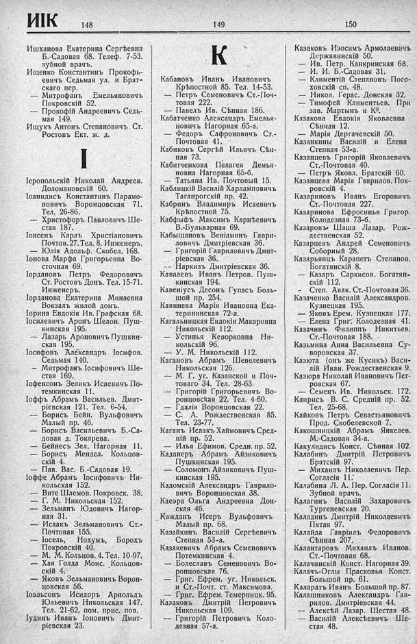

Лист источника 400
Скан

Распознанный текст
ИК 148
Ишханова Екатерина Сергѣевна
Б.-Садовая 68. Телеф. 7-53.
зубной врачъ.
Ищенко Константинъ Прокофь-
евичъ Седьмая ул. и Брат-
скаго пер.
— Митрофанъ Емельяновичъ
Покровскій 52.
— Прокофій Андреевичъ Седь-
мая 149.
Ищукъ Антонъ Степановичъ Ст.
Ростовъ Ект. ж. д.
I
Іеропольскій Николай Андреев.
Доломановскій 60.
Іоанидисъ Константинъ Парамо-
новичъ Воронцовская 71.
Тел. 26-86.
— Христофоръ Павловичъ Ше-
стая 187.
Іонсенъ Карлъ Христіановичъ
Почтов. 27. Тел. 8. Инженеръ.
— Юлія Адольф. Скобел. 168.
Іонова Марфа Григорьевна Во-
сточная 69.
Іордановъ Петръ Федоровичъ
Ст. Ростовъ Донъ. Тел. 15-71.
Инженеръ.
Іорданова Екатерина Минаевна
Вокзалъ жилой домъ.
Іорина Евдокія Ив. Графская 68.
Іосилевичъ Аронъ Шелон. Пуш-
кинская 195.
— Лазарь Ароновичъ Пушкин-
ская 195.
Іосифовъ Александръ Іосифов.
Седьмая 140.
— Митрофанъ Іосифовичъ Ше-
стая 169.
Іофенсонъ Зеликъ Исаевичъ По-
темкинская 11.
Іоффъ Абрамъ Васильев. Дмит-
ріевская 121. Тел. 6-54.
— Борисъ Бейн. Вульфовичъ
Малый пр. 46.
— Борисъ Васильевичъ Б.-Са-
довая д. Токарева.
— Бейнесъ Зел. Нагорная 11.
— Борисъ Мендел. Кольцов-
скій 4.
— Пав. Вас. Б.-Садовая 19.
Іоффе Абрамъ Іосифовичъ Ни-
кольская 152.
— Вите Шлемов. Покровск. 38.
— Г. М. Никольская 152.
— Зельманъ Юдовичъ Нагор-
ная 31.
— Исаакъ Зельмановичъ Ст.-
Почтовая 155.
— Іосель, Нохумъ, Борохъ
Покровскій 40.
— М. М. Кольцов. 4. Тел. 10-97.
— Хая Голда Моис. Кольцов-
скій 4.
— Яковъ Зельмановичъ Ворон-
цовская 56.
Іоэльсонъ Исидоръ Арнольдъ
Юльевичъ Никольская 147.
Тел. 21-62, пом. прис. пов.
Іудинъ Иванъ Іоновичъ Дмит-
ріевская 23.
149
К
Кабановъ Иванъ Ивановичъ
Крѣпостной 85. Тел. 14-53.
— Петръ Семеновичъ Ст.-Поч-
товая 222.
— Павелъ Ив. Сѣнная 186.
Кабатченко Александръ Емелья-
новичъ Нагорная 65-а.
— Федоръ Сафроновичъ Ст.-
Почтовая 41.
Кабиковъ Сергѣй Ильичъ Сѣн-
ная 73.
Кабитченкова Пелагея Демья-
новна Нагорная 65-б.
— Татьяна Ив. Почтовый 15.
Каблицкій Василій Харламповичъ
Таганрогскій пр. 42.
Кабринъ Владимиръ Исаевичъ
Крѣпостной 75.
Кабфыфъ Максимъ Карнѣевичъ
В.-Бульварная 69.
Кабыщановъ Веніаминъ Гаври-
ловичъ Дмитріевская 36.
— Григорій Гавриловичъ Дмит-
ріевская 36.
-- Наркизъ Дмитріевская 36.
Кавалевъ Иванъ Петров. Пуш-
кинская 194.
Кавеніусъ Десонъ Гупасъ Боль-
шой пр. 254.
Кавинева Марія Ивановна Ека-
терининская 72-а.
Кагальницкая Евдокія Макаровна
Никольскій 112.
— Устинья Кеворковна Ни-
кольскій 96.
— У. М. Никольскій 112.
Кагановъ Абрамъ Шевелевичъ
Никольская 126.
— М. Г. уг. Казанской и Поч-
товаго 34. Тел. 28-63.
— Григорій Григорьевичъ Во-
ронцовская 22. Тел. 4-60.
— Гдалія Воронцовская 22.
— С. А. Рождественская 85.
Тел. 23-77.
Каганъ Исаакъ Хаймовичъ Сред-
ній пр. 52.
— Илья Ефимов. Средн. пр. 52.
Каданеръ Абрамъ Айзиковичъ
Пушкинская 195.
— Соломонъ Айзиковичъ Пуш-
кинская 195.
Кадомскій Александръ Гаврило-
вичъ Воронцовская 38.
Каеэра Ольга Андреевна Дон-
ская 46.
Кажданъ Исеръ Вульфовичъ
Малый пр. 68.
Казайкинъ Василій Сергѣевичъ
Степная 53-а.
Казакевичъ Абрамъ Семеновичъ
Потемкинская 4.
— Болеславъ Семеновичъ Во-
ронцовская 76.
— Григ. Ефрем. уг. Никольск.
и Ст.-Почт. ст. Максимова.
— Григ. Ефрем. Темерницк. 95.
Казаковъ Дмитрій Петровичъ
Никольская 109.
— Григорій Петровичъ Коло-
дезная 57-а.
150
Казаковъ Изосимъ Армолаевичъ
Державинскій 50.
— Ив. Петр. Канкринская 68.
— И. И. Б.-Садовая 31.
— Климентій Степановъ Посо-
ховскій сп. 48.
— Никол. Герас. Донская 32.
— Тимофей Климентьев. При
зав. Мартынъ и К⁰.
Казакова Евдокія Яковлевна
Сѣнная 12.
— Марія Дергачевскій 50.
Казанкины Василій и Елена
Степная 53-а.
Казанцевъ Григорій Яковлевичъ
Ст.-Почтовая 40.
— Петръ Яковл. Братскій 60.
Казанцева Марія Гаврилов. Пок-
ровскій 4.
Казариновъ Иванъ Егоровичъ
Ст.-Почтовая 227.
Казаринова Ефросинья Григор.
Колодезная 73-б.
Казаровъ Шаша Лазар. Рож-
дественская 52.
Казарцевъ Андрей Семеновичъ
Соборный 28.
Казарьянцъ Карапетъ Степанов.
Богатянскій 8.
— Казаръ Саркисов. Богатян-
скій 112.
— Степ. Авак. Ст.-Почтовая 36.
Казаченко Василій Александров.
Кузнецкая 195.
— Яковъ Ерем. Кузнецкая 177.
— Елена Григ. Колодезная 41.
Казачинъ Филиппъ Никитьев.
Ст.-Почтовая 188.
Казьмина Анна Васильевна Су-
воровская 37.
Казюта (онъ же Кусикъ) Васи-
лій Иван. Рождественская 9.
Казюра Николай Ивановичъ Пет-
ровская 67.
— Семенъ Ив. Никольск. 172.
Каирисъ В. С. Средній пр. 52.
Тел. 25-68.
Кайковъ Петръ Севастьяновичъ
Прод. Скобелевской 7.
Какошницкій Абрамъ Янкелев.
М.-Садовая 34-а.
Какулидисъ Конст. Сѣнная 102.
Калабинъ Дмитрій Петровичъ
Братскій 97.
— Михаилъ Николаевичъ Пер.
Согласія 11.
Калабина Л. А. Пер. Согласія 11.
Зубной врачъ.
Калагинъ Василій Захаровичъ
Тургеневская 20.
Каладинъ Дмитрій Николаевичъ
Пятая 97.
Калайда Гавріилъ Федоровичъ
Сѣнная 207.
Калантаровъ Михаилъ Иванов.
Ст.-Почтовая 68.
Калачинскій Конст. Нагорная 39.
Калачъ-Оглы Прасковья Конст.
Большой пр. 61.
Каларатъ Иванъ Большой пр. 87.
Калашниковъ Александръ Гав-
рилов. Дмитріевская 44.
— Алексѣй Лазар. Шестая 48.
— Василій Алексѣевичъ Ше-
стая 48.